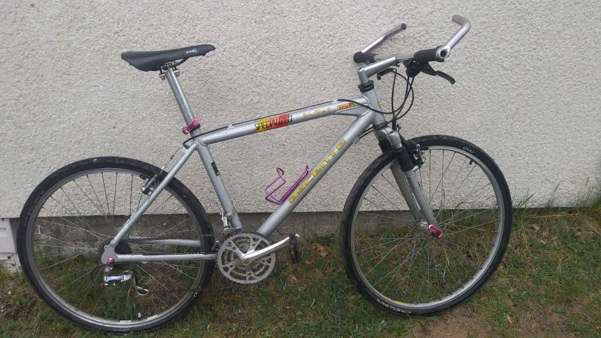

Se procurer un vélo
Grace aux dons et à l'abondance des rebuts de Rimouski, nous avons un lot de vélos et de pièces de vélos pour (presque) tous les goûts ! Si vous voulez vous en procurer un, on vous propose trois options :
Échange de services
Vous n'avez pas le sou ? On vous comprend et voilà ce qu'on propose : vous assemblez deux vélos, le premier pour nous, le deuxième pour vous, gratiss.
En pièces détachés
Si vous n'avez pas peur de la graisse à bearings et quelques après-midi devant vous, c'est possible de fouiller dans le grenier pour les pièces qu'il vous faut pour vous monter le vélo de vos rêves. Comme vous faites le travail, on vous fait le vélo à prix réduit.
Le prêt à porter (et rouler)
Des vélos restaurés par nos mécanos bénévoles, en bon état. Idéal si vous n'avez pas le temps ou la patience d'assembler vous même votre monture.
100$